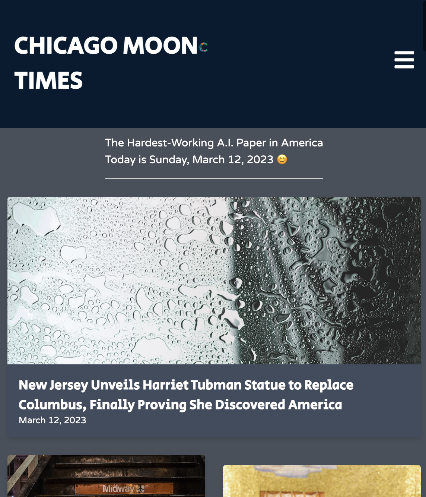

Chicago Moon-Times
The Chicago Moon-Times is the first, fully-automated satirical news site created to spread laughter and joy in the world. The site is powered by OpenAI’s ChatGPT and all content is satirical and not meant to be taken seriously. The site runs itself, with two to three articles generated every day based on recent national and local events.
The application was built using a React frontend and a Node.js backend, with articles stored on a Firebase Realtime Database and multiple APIs used for image and content generation. The site is hosted on Google Cloud.